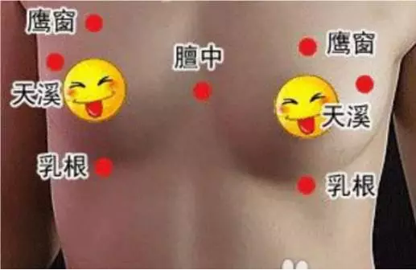

艾灸丰胸：胸部是女性重要的生理器官之一，每个爱美的女人都希望自己能拥有一副丰满而坚挺的胸部，这会让女人更有独特的女人魅力，生活中更能吸引异性的目光，但不是每个女性心里所想的和现实是一样的，有些女性天生就是一副平胸，给女性带来的烦恼也是很大的。

但凡胸部发育不良或者胸部下催严重的女性，从中医角度看，一般都会存在脾虚或肾虚的情况。中医认为：脾胃虚弱，运化失健，或脾胃阳虚，肤失濡养造成胸部发育不丰满。
这不是没有道理的，从经络学说来分析：人体的胸部分别左右对称的分布运行着脾经、胃经、肾经以及肝经，而脾主肌肉，脾胃相表里，所以胸部的丰满程度跟脾胃的强健程度有很大的关系。
脾虚表现为脸色发黄没有血色，易疲劳，肌肉松软无力，消化吸收能力差，身体瘦削或虚胖，月经量过少或过多。肾虚表现为手脚冰凉、腰膝酸软、头晕耳鸣、失眠健忘、免疫力低下等。中医认为肾为先天之本，脾胃为后天之本，二者互相影响，互为补充。所以肾气充盛、脾胃强健的女性，面色红润，体型健美，丰满而不臃肿。
艾灸疗法是有着几千年历史的中医外治疗法，具有温通经脉，补益气血，健脾益肾的功效，尤其适于各种虚损性疾病和慢性迁延性疾病。在韩国、日本以及很多欧美国家，艾灸被普遍应用于养生保健领域，因其在抗衰养颜方面效果显著，而备受求美女性的欢迎。艾灸可以增强女性的脾肾功能，使女性气血充盈，冲任调和，经常做艾灸，不但可以使女性身材丰满健美，还可以延缓衰老，祛除黄褐斑，防治子宫肌瘤、乳腺增生等女性疾病。、
艾灸丰胸是通过穴位刺激脑下垂体，增加荷尔蒙的分泌，产生乳腺发育所需的雌性激素，使得乳房增大，变得丰满，坚挺。
艾灸丰胸怎么做？

艾灸丰胸方法：使用艾灸仪或艾绒作用在以上穴位上，艾灸时间：15-30分钟/次，每天或隔天一次，15次为一疗程。艾灸丰胸功效：通过穴位刺激脑下垂体，增加荷尔蒙的分泌，产生乳腺发育所需的雌性激素，使得乳房增大，变得丰满，坚挺。
艾灸疗法是有着几千年历史的中医外治疗法，具有温通经脉，补益气血，健脾益肾的功效，尤其适于各种虚损性疾病和慢性迁延性疾病。在韩国、日本以及很多欧美国家，艾灸被普遍应用于养生保健领域，因其在抗衰养颜方面效果显著，而备受求美女性的欢迎。艾灸可以增强女性的脾肾功能，使女性气血充盈，冲任调和，经常做艾灸，不但可以使女性身材丰满健美，还可以延缓衰老，祛除黄褐斑，防治子宫肌瘤、乳腺增生等女性疾病。
关元：标准定位，任脉穴。在下腹部，前正中线上，当脐中下3寸。有强壮和保健的作用，可增强腹部肌纤维的弹性，更可调节女性内分泌平衡，治疗月经不调、遗尿，小便频数，尿闭，月经不调，带下不孕等。
肝俞定位：在背部，第九胸椎棘突下，旁开1.5寸。
肝的生理功能:主蔬泄、藏血，在体为筋，其华在爪，开窍于目。因此，肝气郁积则肋部疼痛；血不养目则视力下降；藏血异常则吐血、月经不调；筋脉不通则腰背酸痛。艾灸按揉肝俞穴，可疏肝宽胸理气、养血明目、潜阳熄风，对乳房起到很好的保健作用。
鹰窗定位：前胸第三肋间，正中线旁开4寸。
膺窗、乳根、为足阳明胃经穴位，临近取穴可以健脾益胃丰胸，
膻中穴定位：胸部并行线上的中心点，正对到胸骨上的位置。
艾灸刮揉膻中穴就可使气机顺畅，烦恼减轻；女性朋友按此穴不仅能防治乳腺炎，还可丰胸美容；产妇灸膻中则可催乳。
乳根穴定位：双乳中心点向下，乳房根部的正下方处，一边一个。
天溪穴定位：位于乳头向外延长线上，将手的虎口张开，正对乳房四指托住，拇指对着乳房外侧两处(第四五肋间)即是天溪穴。
天溪穴归属足太阴脾经，有生发脾气,宽胸理气,止咳通乳,宽胸通乳的作用。
在以上穴位上艾灸，肝俞穴自我艾灸可选用多功能艾灸器，扣在背部乳房的对应区就可以了，多功能的大面积艾灸不怕艾灸不到这个穴位。
在艾灸的过程中，胸部我们建议用能量杯艾灸，这样边艾灸边可以利用杯口托住乳房从乳房根部往乳头的方向做轻刮，可以起到促进乳房的气血充盈，让经络更加疏通，宽胸理气，坚持每周一两次，慢慢的会发现，不但乳房比以前坚挺丰满了，脸色也比以前开亮红润了，更重要的是性格也越来越好了！
艾灸丰胸的好处在于，不会像一些丰胸药那样产生副作用，并且不会像丰胸手术那样留下难看的疤痕。艾灸丰胸可以让女性身材更加有曲线美，在比较短的时间里可以让胸部平坦的女性摇身一变成为性感的尤物。如果你月经尝尽了平胸之苦，那么就赶快试一下艾灸丰胸吧。
原文出处：http://aiyijiu.github.io/article/211.html 更多艾灸资讯尽在艾易灸艾灸网！